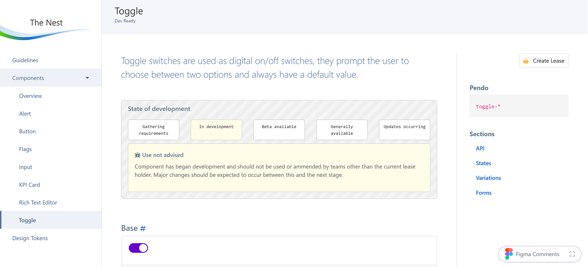
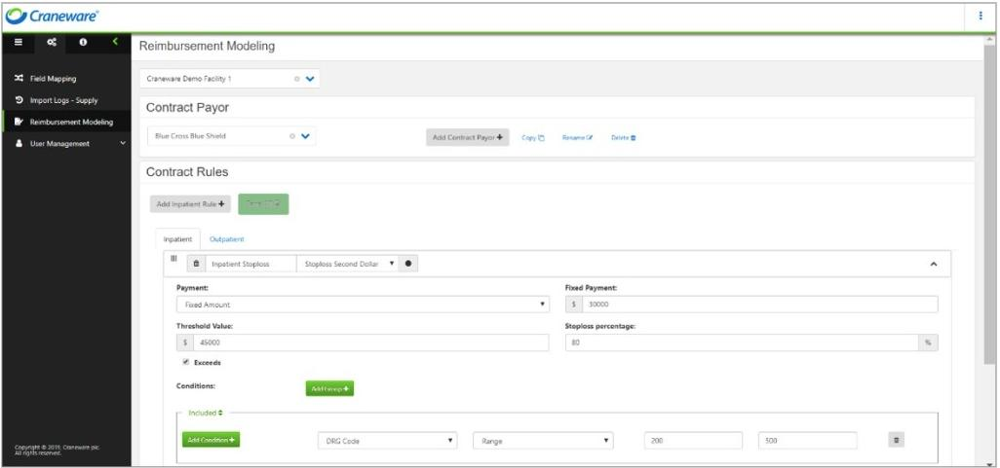
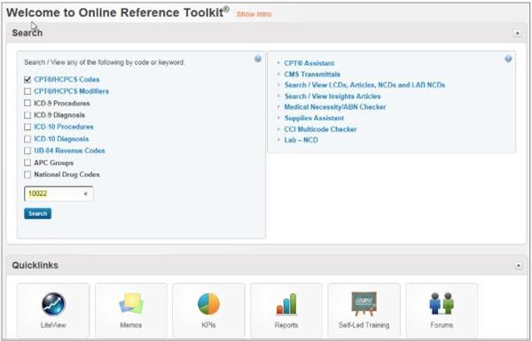

/ Case studies /
/ Case studies /

When I joined Craneware as Principle UX, the Experience team was responsible for nine products: four live on our SaaS platform Trisus, five in the process of being migrated across.
I grew the UX team from one designer to eight, giving each product dedicated design resource and beginning the work of visual alignment across the portfolio.
Consistency at the design layer only revealed a deeper problem. Each product had multiple development teams with varying frontend skills working on it, and despite components looking and behaving identically in Figma, implementations varied wildly in practice. The same component might exist in a dozen different forms across the codebase — creating unnecessary duplication, slow development, inconsistent experiences to users, and serious accessibility failures.


I decided to combat this we needed to develop a true design system, one that leaned on the work we had done within Figma but also supported Engineers across the business. I wanted to significantly reduce frontend delivery time and improve accessibility across the whole of Trisus.
I recruited Engineers from each development team that had an interested in frontend. I facilitated four workshops over a month where we identified needs (from both UX and Engineering), agreed on a high level approach to The Nest and started to map out system architecture and process at a high level.
One key decision was that the Engineering team responsible for ‘policing’ The Nest should sit outside existing product teams and it was agreed that the best place was within the UX team under my leadership. This positioning would allow us to create governance around The Nest and positioned the UX team as the thought leaders for frontend development and UI within the organisation.
With a high level plan in place I successfully made the case to C-suite for two front engineers to join my team, one an existing Senior Engineer and one new hire. With these resources in place we could start the next phase.
While we all understood the importance of building a design system it was important we were able to show success. As part of this I looked at consistency of design, time to develop and repetition in codebase and I set the following metrics for us to aim for
I created a small project team from the new Engineers and existing members of the UX team. We went through the needs identified from the workshops and documented requirements within Jira. I then set up a Trello board with all atoms, molecules and organisms in priority order based on current state, project need and dependencies. I created a review template to enable the team to systematically analyse what we already had on the platform and determine what work was required before we started design. The team then each took the next item from the Trello board and worked through our agreed process.


While the UX team were building the backlog of components the Engineers set to work building The Nest directly within the platform. We built The Nest directly within Trisus so that Engineers could discover, test, and adopt components without leaving their workflow. Using the requirements gathered in initial workshops The Nest was built to ensure it could be easily managed as components evolved over time. Both UXers and Engineers could check items out to work on them and this was made clear to anyone looking to use the component. The Nest contained everything an Engineer required to implement a fully accessible component within their product.
Once we had a core set of components I went on a tour of Engineering teams to promote The Nest and gain further buy-in. I also worked closely with our Engineers to create training for new staff so that The Nest was positioned as the way we did things from day one.
As mentioned The Nest was designed with future iterations in mind. The process I created for new components was used for components requiring iteration. The process allowed anyone to request/propose changes. If changes were proposed from outside the UX team then these were discussed in our team meeting before being prioritised and actioned.
When I left Craneware all products on our SaaS platform, Trisus, had adopted The Nest and were using the components created within. This transformed Trisus from a collection of separate products to a cohesive, accessible, SaaS platform.
Comparing frontend Jira ticket completion rates before and after the release of the The Nest showed us that we had achieved a 50% reduction in the time it took to complete frontend work on Trisus. This went far beyond what we considered success and as more components were released this reduction was predicted to reduce even further. We also saw a drop in frontend support tickets coming from code released using Nest components.
We managed to eliminate component duplication from the code base and within the UI for components created within The Nest. All engineering teams took on the challenge of systematically replacing legacy components with Nest ones.
Outside of the metrics The Nest also established UX as the owner of the design system and strengthened our partnership with Engineering